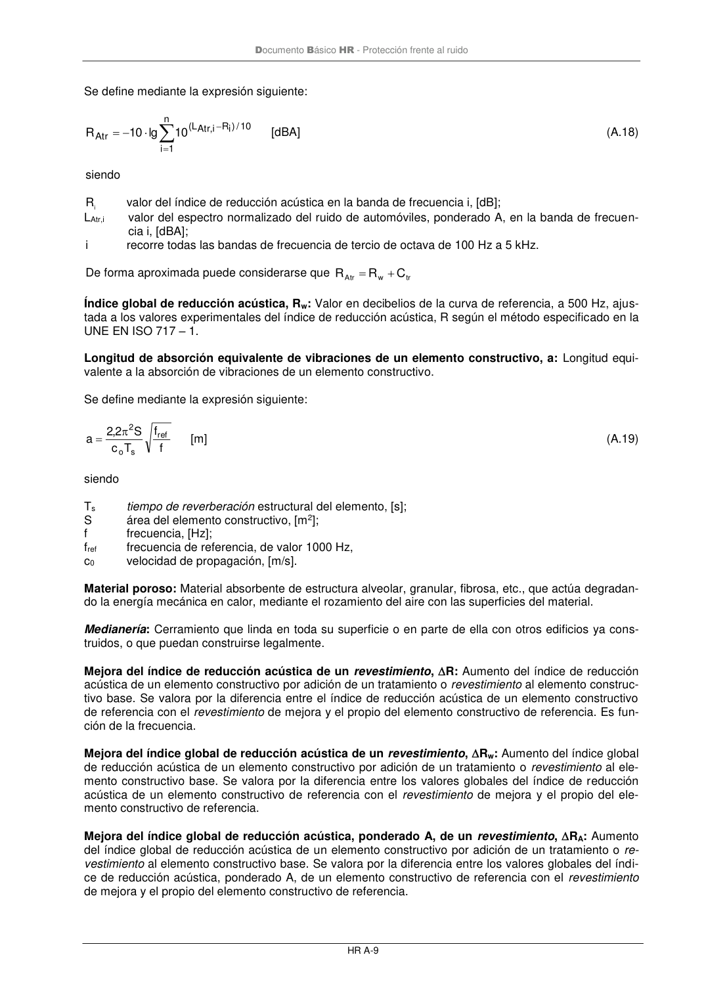

DB-HR · Longitud de absorción equivalente de vibraciones de un elemento constructivo, a: Longitud equivalente a la absorción de vibraciones de un elemento constructivo. · versión 2019-12-20
SHA256: a67baeca5138bb1f121f797d23a79a4557bd9ac4abacd954024893e05411eeab · página física 51 de 80 · métodos de encabezado
solo si están cotejados.
Formatos: Markdown · JSON de bloques · PDF p. 51 · imagen PNG
Documento Básico HR - Protección frente al ruido
HR A-9
Se define mediante la expresión siguiente:
=
−
−
=
n
1
i
10
/)i
R
i,
Atr
L
(
Atr
10
lg
10
R
[dBA]
(A.18)
siendo
Ri
valor del índice de reducción acústica en la banda de frecuencia i, [dB];
LAtr,i
valor del espectro normalizado del ruido de automóviles, ponderado A, en la banda de frecuen-
cia i, [dBA];
i
recorre todas las bandas de frecuencia de tercio de octava de 100 Hz a 5 kHz.
De forma aproximada puede considerarse que
tr
w
Atr
C
R
R
+
=
Índice global de reducción acústica, Rw: Valor en decibelios de la curva de referencia, a 500 Hz, ajus-
tada a los valores experimentales del índice de reducción acústica, R según el método especificado en la
UNE EN ISO 717 – 1.
Longitud de absorción equivalente de vibraciones de un elemento constructivo, a: Longitud equi-
valente a la absorción de vibraciones de un elemento constructivo.
Se define mediante la expresión siguiente:
f
f
T
c
S
2,2
a
ref
s
o
2
=
[m]
(A.19)
siendo
Ts
tiempo de reverberación estructural del elemento, [s];
S
área del elemento constructivo, [m2];
f
frecuencia, [Hz];
fref
frecuencia de referencia, de valor 1000 Hz,
c0
velocidad de propagación, [m/s].
Material poroso: Material absorbente de estructura alveolar, granular, fibrosa, etc., que actúa degradan-
do la energía mecánica en calor, mediante el rozamiento del aire con las superficies del material.
Medianería: Cerramiento que linda en toda su superficie o en parte de ella con otros edificios ya cons-
truidos, o que puedan construirse legalmente.
Mejora del índice de reducción acústica de un revestimiento, R: Aumento del índice de reducción
acústica de un elemento constructivo por adición de un tratamiento o revestimiento al elemento construc-
tivo base. Se valora por la diferencia entre el índice de reducción acústica de un elemento constructivo
de referencia con el revestimiento de mejora y el propio del elemento constructivo de referencia. Es fun-
ción de la frecuencia.
Mejora del índice global de reducción acústica de un revestimiento, Rw: Aumento del índice global
de reducción acústica de un elemento constructivo por adición de un tratamiento o revestimiento al ele-
mento constructivo base. Se valora por la diferencia entre los valores globales del índice de reducción
acústica de un elemento constructivo de referencia con el revestimiento de mejora y el propio del ele-
mento constructivo de referencia.
Mejora del índice global de reducción acústica, ponderado A, de un revestimiento, RA: Aumento
del índice global de reducción acústica de un elemento constructivo por adición de un tratamiento o re-
vestimiento al elemento constructivo base. Se valora por la diferencia entre los valores globales del índi-
ce de reducción acústica, ponderado A, de un elemento constructivo de referencia con el revestimiento
de mejora y el propio del elemento constructivo de referencia.
